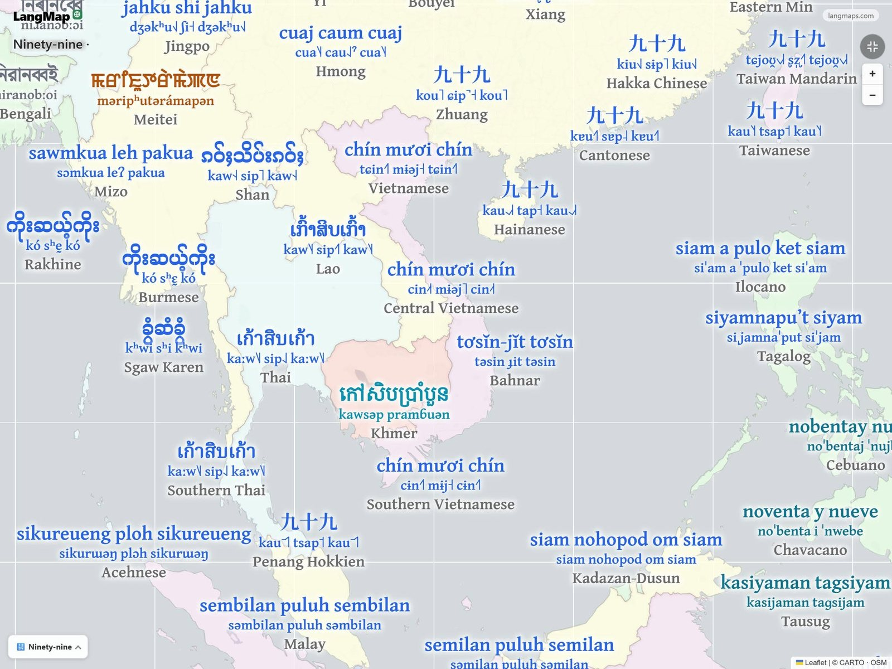

The Secret Life of 99 (Part 2): When Ten Is Not Always Ten
- Vietnamese preserves two traditions of counting, one native and one Chinese-derived. Even a group called "ten" may not always contain exactly ten items.
- Thai numbers sound surprisingly similar to Cantonese, preserving traces of ancient connections with Chinese.
- In Khmer, nine is literally "five plus four." And 99 combines two different histories in a single expression.

Contents
When Ten Doesn't Mean Ten
In Part 1, we discovered that Korean number words were recorded centuries before Hangul existed.
Now travel south to Vietnam.
Here, the Chinese characters 九十九 have a Sino-Vietnamese reading:
cửu thập cửu.
But in everyday Vietnamese, 99 is chín mươi chín.
九十九 → cửu thập cửu
99 → chín mươi chín
Two sets of words. Two different linguistic histories.
And Vietnamese has a curious habit.
One is một, but twenty-one is hai mươi mốt.
Five is năm, but twenty-five is hai mươi lăm.
21: hai mươi mốt
25: hai mươi lăm
99: chín mươi chín
Even more surprising is chục, normally meaning a group of ten.
In traditional market counting, a chục of certain fruits may contain more than ten items, depending on local customs.
The exact quantity can vary by region and product.
A number can be mathematically precise and culturally flexible at the same time.
But the next country offers a different mystery.
What if a language's most ordinary numbers came from another language thousands of years ago?
Thailand: Chinese Numbers in Disguise
Thai belongs to the Kra-Dai language family and uses its own writing system.
Yet listen to some Thai numbers.
They sound remarkably similar to Chinese, particularly Cantonese and other southern Chinese varieties.
| Thai | Cantonese | |
|---|---|---|
| 6 | หก (hòk) | 六 (luk6) |
| 7 | เจ็ด (chèt) | 七 (cat1) |
| 8 | แปด (pàet) | 八 (baat3) |
| 9 | เก้า (kâo) | 九 (gau2) |
| 10 | สิบ (sìp) | 十 (sap6) |
The similarities are striking.
Especially the final consonants: -k, -t, and -p.
These sounds survive in Cantonese and Thai, even though they have disappeared from the corresponding syllables in modern Mandarin.
Linguists have identified early Chinese loanwords among Tai numerals. The precise histories of individual words are complex, and the similarities alone do not prove that every numeral was borrowed.
But they reveal why comparing Thai only with modern Mandarin can be misleading.
The Chinese spoken in ancient times was not the same as the Mandarin spoken today.
And words borrowed long ago can preserve ancient sounds.
Thai twenty: a second two
There is another surprise.
Two is สอง (sǒng).
But twenty is ยี่สิบ (yîi sìp).
And twenty-one is ยี่สิบเอ็ด (yîi sìp èt).
2: สอง (sǒng)
20: ยี่สิบ (yîi sìp)
21: ยี่สิบเอ็ด (yîi sìp èt)
The special yîi form is historically related to an older numeral for two.
Even a simple number like twenty can preserve a layer of linguistic history.
And 99?
เก้าสิบเก้า (kâo sìp kâo).
Nine-ten-nine.
The familiar decimal structure survives.
But just across the border, in Cambodia, things change dramatically.
Cambodia: When Nine Means Five Plus Four
Imagine learning Khmer numbers.
One, two, three, four, five.
So far, nothing unusual.
Then comes six.
Instead of a completely new basic number, you encounter five plus one.
Seven is five plus two.
Eight is five plus three.
Nine is five plus four.
៥ = ប្រាំ (pram) = 5
៦ = ប្រាំមួយ (pram muoy) = 5 + 1
៧ = ប្រាំពីរ (pram pii) = 5 + 2
៨ = ប្រាំបី (pram bei) = 5 + 3
៩ = ប្រាំបួន (pram buon) = 5 + 4
Five is a building block of the system.
And this is not an ancient curiosity.
It is how modern Khmer speakers count.
Now consider 99.
In Khmer, it is:
កៅសិបប្រាំបួន (kao sip pram buon).
Break it apart.
កៅសិប = 90
ប្រាំ = 5
បួន = 4
99 = 90 + (5 + 4)
The first part, កៅសិប (kao sip), closely resembles Thai เก้าสิบ (kâo sìp).
The Khmer tens from thirty to ninety reflect historical borrowing from Thai or closely related Tai forms.
The second part, ប្រាំបួន (pram buon), preserves Khmer's inherited five-based structure.
Two different numerical traditions meet inside one number.
Five, ten, twenty
But that is not the whole story.
Khmer also has ម្ភៃ (mphei), a special word for twenty.
And in older Khmer, twenty could serve as a larger counting unit.
Forty could be expressed as two twenties.
Fifty could be two twenties plus ten.
40 = 2 × 20
50 = 2 × 20 + 10
Five. Ten. Twenty.
Different ways of organizing numbers have left their marks on the same language.
Why twenty?
Our fingers and toes provide an intuitive possibility, though the precise historical origins of these systems are more complicated.
And here comes the greatest surprise.
Counting by twenties is not merely a feature of ancient Cambodia.
It remains alive in modern Europe.
Not just in French.
In Basque, Welsh, Breton, and even Danish.
And one of those languages has a word for ninety that historically means four and a half times twenty.
Continued in Part 3: When Ninety Means Four and a Half Twenties.